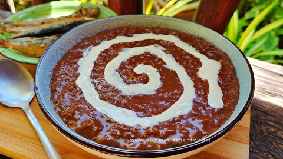
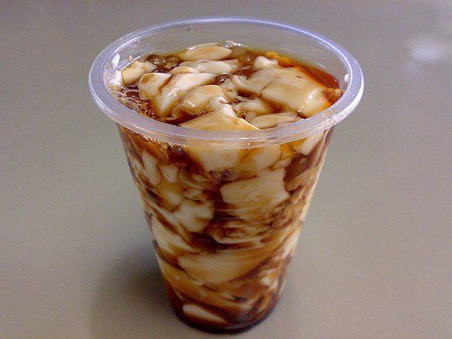

It is traditionally made by boiling sticky rice with tablea (traditional tablets of pure ground roasted cocoa beans). It can be served hot or cold, usually for breakfast or merienda, with a drizzle of milk (or coconut milk) and sugar to taste. It is usually eaten as is, but a common pairing is with salted dried fish (daing or tuyo).
Filipinos love taho as an early morning snack, even though it's not exactly a breakfast dish. Taho is a soft dessert made of silken tofu, garnished with gummy and roe-like sago pearls, and generously sweetened with brown sugar syrup.
Street-side traditional taho is usually served warm and soft. Store-bought versions are typically firm and cold, so you'll have to break them first like a pudding.
